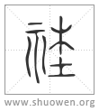

𥙭
古文社。
清代 段玉裁《說文解字注》
- 地主也。
五經異義。今孝經說曰。社者土地之主。土地廣博。不可徧敬。封五土以爲社。古左氏說。共工爲后土、爲社。許君謹案曰。春秋稱公社。今人謂社神爲社公。故知社是上公。非地祇。鄭駁之云。社祭土而主陰氣。又云。社者神地之道。謂社神但言上公。失之矣。人亦謂雷曰雷公、天曰天公。豈上公也。宗伯以血祭祭社稷五祀五嶽。社稷之神若是句龍、柱、棄。不得先五嶽而食。又引司徒五土名。又引大司樂五變而致介物及土示。土示五土之緫神。卽謂社也。六樂於五地無原隰而有土祇。則土祇與原隰同用樂也。玉裁按。許訓社爲地主。此用今孝經說。而以地主也、从示土之云、先於左氏傳。則與異義从左氏說者不符。葢許君異義先成。說文晚定。往往有說文之說早同於鄭君之駁者。如社稷、昊天、聖人感天而生、三愙等皆是也。
- 从示土。
鍇土下本無聲字。韵㑹所引是也。地主爲社。故字从示土。
- 春秋傳曰。共工之子句龍爲社神。
左氏傳昭公廿九年。史墨曰。共工氏有子曰句龍。爲后土。后土爲社。許旣从今孝經說矣。又引古左氏說者。此與心字云土藏也、象形、博士說以爲火藏一例。兼存異說也。鄭駁異義。以爲社者五土之神。能生萬物者。以古之有大功者配之。然則句龍配五土之神祭於社。
- 周禮二十五家爲社。
風俗通義曰。周禮說二十五家爲社。但爲田祖報求。許云周禮者、周禮說也。賈逵杜預注左傳、高誘注吕覽、薛瓚注五行志皆同。晏子春秋桓公以書社五百里封管仲、吕覽越以書社三百里封墨子、史記將以書社七百里封孔子皆謂二十五家爲里、里有社。故云書社若千里。鄭駁異義引州長職曰。以歲時祭祀州社。是二千五百家爲社也。祭法。大夫以下成羣立社、曰置社。注云。大夫以下、謂下至庶人也。大夫不得特立社。與民族居。百家以上則共立一社。今時里社是也。引郊特牲唯爲社事單出里。是鄭不用周禮說。與許異。
- 各樹其土所宜木。
大司徒。設其社稷之壝而樹之田主。各以其野之所宜木。遂以名其社與其野。注。所宜木、謂若松柏栗也。若以松爲社者、則名松社。五經異義。許君謹案。論語所云、謂社主也。鄭無駁。注周禮從許義。按莊周書之櫟社、高祖所禱之枌榆社皆以木名社之遺。韓非子云。社木者、樹木而塗之。鼠穿其閒。堀穴託其中。熏之則恐焚木。灌之則恐塗阤。此可見樹木爲主之制。○社爲地主、而尊天親地。二十五家得立之。故字不與祡禷爲伍。常者切。古音在五部。
- 古文社。
各本從示。非古文也。今依夏氏竦古文四聲韵所引。從木者、各樹其土所宜木也。